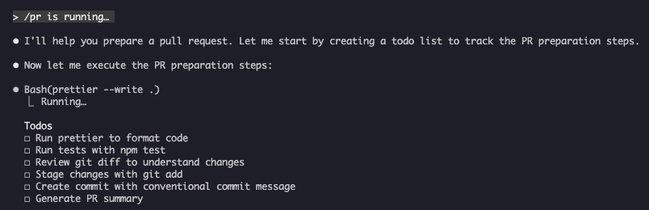

슬래시 명령어
개요
슬래시 명령어는 대화형 세션 동안 Claude의 동작을 제어하는 단축키입니다. 여러 유형이 있습니다:
- 내장 명령어: Claude Code에서 제공합니다 (
/help,/clear,/model) - 스킬:
SKILL.md파일로 생성된 사용자 정의 명령어입니다 (/optimize,/pr) - 플러그인 명령어: 설치된 플러그인에서 제공하는 명령어입니다 (
/frontend-design:frontend-design) - MCP 프롬프트: MCP 서버에서 제공하는 명령어입니다 (
/mcp__github__list_prs)
참고: 사용자 정의 슬래시 명령어는 스킬로 통합되었습니다.
.claude/commands/에 있는 파일은 여전히 작동하지만, 스킬(.claude/skills/)이 이제 권장되는 방식입니다. 두 가지 모두/command-name단축키를 생성합니다. 전체 참조는 스킬 가이드를 참조하십시오.
내장 명령어 참조
내장 명령어는 일반적인 작업을 위한 단축키입니다. 60개 이상의 내장 명령어와 약 20개의 번들 스킬(일부는 기능 플래그로 제한됨)이 제공됩니다. Claude Code에서 /를 입력하여 전체 목록을 보거나, / 뒤에 글자를 입력하여 필터링할 수 있습니다.
참고: v2.1.236부터 잘못 입력한 슬래시 명령어나 현재 세션에서 사용할 수 없는 명령어에서 Enter를 누르면, 가장 가까운 퍼지 매치를 조용히 실행하는 대신 오류를 보고합니다. 모호하지 않은 접두사와 정의된 별칭은 이전처럼 실행됩니다.
| Command | 목적 |
|---|---|
/add-dir <path> |
작업 디렉터리 추가 |
/advisor [model\|off] |
어드바이저를 구성합니다. 대화형 대화 상자로 열리며, 데스크톱 앱, 원격 제어, 헤드리스(-p / Agent SDK) 세션에서는 텍스트 형식을 사용합니다 — 인자 없는 /advisor, /advisor <model>, 또는 /advisor off (v2.1.260+) |
/agents |
더 이상 작동하는 명령어가 아닙니다: 대화형 마법사는 v2.1.198에서 제거되었고, v2.1.281부터 /agents는 / 메뉴나 /help에 나타나지 않습니다 — 입력하면 마법사가 어디로 갔는지만 설명합니다. Claude에게 서브에이전트 생성·관리를 요청하거나 .claude/agents/ 파일을 직접 편집하십시오 |
/artifacts |
내가 소유하거나 나와 공유된 아티팩트를 나열한 다음, 세션에 첨부하거나 브라우저에서 열거나 링크를 복사합니다 (v2.1.208+). d로 삭제하면 확인을 요청합니다: 1 또는 Enter는 유지, 2는 삭제, Esc는 취소 (v2.1.305) |
/auto-mode-setup |
프로젝트와 최근 세션에서 autoMode.environment 항목 초안을 작성하고, 초안을 검토한 뒤 사용자 설정에 저장합니다. Pro/Max/Team: v2.1.228+ (네이티브 Windows는 v2.1.233+); Enterprise 또는 Console API 키: v2.1.283+. v2.1.304부터 Bedrock, Vertex, Foundry, Claude 앱 게이트웨이, 텔레메트리 꺼짐 세션에서도 사용할 수 있습니다 |
/branch [name] |
현재 시점의 대화 사본으로 전환하며 원본은 보존합니다 (/resume으로 원본으로 돌아갈 수 있음) |
/fork [prompt] |
현재 대화를 새 백그라운드 세션으로 복사하고 여기서 계속 작업합니다. 그 시점부터 두 세션은 독립적이며, 사본은 claude agents에 자체 행을 갖습니다 (v2.1.212+). 사본이 제자리에서 편집하는 경우를 제외하고, Claude Code는 코드를 변경하기 전에 자체 워크트리를 만들도록 지시합니다 (격리 지시는 v2.1.221+ 필요) |
/subtask <task> |
전체 대화를 상속하는 포크된 서브에이전트를 생성하여, 사용자가 계속 작업하는 동안 해당 작업을 수행합니다. 완료되면 결과가 이 대화로 돌아옵니다 (v2.1.212+) |
/btw [question] |
Claude가 주 작업을 수행하는 동안 임시 보조 질문을 합니다. 주 대화 컨텍스트를 오염시키지 않습니다. 인자 없는 /btw는 마지막 보조 질문을 다시 엽니다 (v2.1.212+) |
/cd <path> |
프롬프트 캐시를 깨뜨리지 않고 세션을 새 작업 디렉터리로 이동합니다 (v2.1.169에 추가) |
/chrome |
Chrome 브라우저 통합 구성 |
/clear |
대화 지우기 (별칭: /reset, /new) |
/color [color\|default] |
프롬프트 바 색상을 설정합니다. 인자 없이 /color를 사용하면 임의의 세션 색상을 선택합니다 (v2.1.128+). 색상 이름 또는 16진수를 전달하여 명시적으로 설정합니다. |
/compact [instructions] |
선택적 포커스 지침을 사용하여 대화를 압축합니다. 압축에 실패하면 이제 아무 일도 없이 넘어가지 않고 UI에 오류로 표시됩니다 (v2.1.216) |
/config |
설정 열기 (별칭: /settings) |
/context |
컨텍스트 사용량을 컬러 그리드로 시각화합니다. 사용량이 컨텍스트 창 한도를 넘으면 명시적인 경고를 표시합니다 (v2.1.216) |
/copy [N] |
어시스턴트 응답을 클립보드에 복사합니다. w는 파일에 씁니다 |
/cost |
/usage의 타이핑 단축 별칭 — 비용 탭을 엽니다 (v2.1.118+) |
/desktop |
데스크톱 앱에서 계속 (별칭: /app) |
/diff |
커밋되지 않은 변경 사항에 대한 대화형 Diff 뷰어. 전체 화면 렌더링에서는 대신 대화 옆에 Diff 패널을 열어 작업을 계속하는 동안 열린 상태로 유지합니다 — 추가/삭제된 줄 수와 함께 변경된 파일을 나열하며, Claude가 파일을 편집하거나 셸 명령을 실행할 때마다 새로 고칩니다. /diff를 다시 실행하거나 ✕를 클릭하면 닫힙니다 (v2.1.260+). 클래식 렌더러는 프롬프트 자리에 뷰어를 엽니다 |
/doctor |
설치 상태를 진단합니다 — Claude가 응답 중일 때도 열 수 있습니다. 번들 스킬로서 Claude가 설정을 점검하고 수정 사항을 제안하며, 사용자가 확인하면 적용합니다(claude doctor는 읽기 전용 진단을 실행). Pro, Max, Team, Enterprise 플랜에서는 점검 시 /usage가 권장하는 변경 사항도 제안합니다 (v2.1.305, 원격 제어가 연결된 동안에는 건너뜀). /doctor prompt-audit(또는 /checkup prompt-audit)는 CLAUDE.md 파일, 스킬, 에이전트, 명령어에서 이전 모델용으로 작성된 프롬프트 패턴을 점검합니다 (v2.1.283) |
/effort [low\|medium\|high\|xhigh\|max\|auto\|ultracode [on\|off]] |
대화형 화살표 키 슬라이더로 노력 수준을 설정합니다. 수준: low → medium → high → xhigh (v2.1.111에 새로 추가) → max. 기본값은 Opus 5.5(v2.1.280부터 기본 모델), Sonnet 5.5, Haiku 5.5에서 medium, Opus 5, Sonnet 5, Opus 4.8에서 high, Opus 4.7에서 xhigh입니다. xhigh는 Fable 5.1, Fable 5, Opus 5.5, Sonnet 5.5, Haiku 5.5, Opus 5, Sonnet 5, Opus 4.8 또는 Opus 4.7이 필요합니다. max는 Fable 5.1, Fable 5, Opus 5.5, Sonnet 5.5, Haiku 5.5, Opus 5, Sonnet 5, Opus 4.8/4.7/4.6 및 Sonnet 4.6에서 작동합니다. /effort가 모델별 설정이 되기 전에 저장된 수준은 Opus 5.5처럼 새로 출시된 모델에는 적용되지 않습니다 (v2.1.280). 슬라이더에는 Ultracode 토글(Tab 또는 /effort ultracode [on\|off])도 있습니다 — 모델 노력 수준이 아니며, 세션이 실행 중인 노력 수준에서 Claude가 동적 워크플로를 조율하게 합니다. v2.1.284부터 더 이상 xhigh를 강제하지 않으며 수준을 바꿔도 켜진 상태로 유지됩니다. /effort ultracode는 세션 동안 유지되며, ultracode 설정을 사용하면 영구적으로 유지됩니다 |
/exit |
REPL 종료 (별칭: /quit) |
/export [filename] |
현재 대화를 파일 또는 클립보드로 내보냅니다 |
/usage-credits |
속도 제한을 위한 추가 사용량 구성 (v2.1.144에서 /extra-usage에서 이름 변경, /extra-usage는 여전히 별칭으로 작동) |
/fast [on\|off] |
빠른 모드 전환. Opus 5.5(v2.1.280부터 빠른 모드 기본값), Opus 5, Opus 4.8에 적용됩니다 |
/feedback |
피드백 제출. v2.1.141부터 최근 세션(지난 24시간 또는 7일)을 첨부할 수 있어 여러 세션에 걸친 보고서에 컨텍스트가 포함됩니다. v2.1.178부터 /bug는 제출 전에 설명이 필요합니다. |
/focus |
포커스 뷰 전환 (v2.1.110에 추가, 포커스 토글용 Ctrl+O를 대체) |
/goal <statement> |
세션 수준 완료 조건을 등록합니다. Claude는 목표가 달성될 때까지 계속 작업합니다. /goal clear는 이를 제거합니다. 활성 목표는 상태 표시줄에 나타나며, 경과 시간, 턴 수, 토큰 사용량을 보여주는 라이브 오버레이 패널이 함께 표시됩니다 (v2.1.139에 추가). |
/help |
도움말 표시 |
/hooks |
훅 구성 보기 |
/ide |
IDE 통합 관리 |
/init |
CLAUDE.md 초기화. 대화형 흐름을 위해 CLAUDE_CODE_NEW_INIT=1 설정 |
/insights |
세션 분석 보고서 생성 |
/install-github-app |
GitHub Actions 앱 설정 |
/install-slack-app |
Slack 앱 설치 |
/keybindings |
키 바인딩 구성 열기 |
/fewer-permission-prompts |
최근 Bash/MCP 도구 호출을 분석하고 권한 프롬프트를 줄이기 위해 .claude/settings.json에 우선순위가 지정된 허용 목록을 추가합니다 (v2.1.111에 추가) |
/login |
Anthropic 계정 전환 |
/logout |
Anthropic 계정에서 로그아웃 |
/mcp |
MCP 서버 및 OAuth 관리 |
/memory |
CLAUDE.md 편집, 자동 메모리 전환 |
/mobile |
모바일 앱용 QR 코드 (별칭: /ios, /android) |
/model [model] |
모델을 선택하고 왼쪽/오른쪽 화살표로 노력 수준을 조정합니다. v2.1.153부터 선택은 새 세션의 기본값으로 저장됩니다 (IDE와 동일). 선택 후 s를 누르면 현재 세션에만 적용합니다. (modelPicker:setAsDefault 키 바인딩이 modelPicker:thisSessionOnly로 이름이 변경되었고, 이전 d 동작은 이제 s입니다.) v2.1.219부터 선택기는 병합된 Opus 행을 "Opus (1M context)"로 표시했으며, v2.1.283은 Opus가 이미 1M 창을 가진 Opus 및 Default 행에서 해당 레이블을 제거합니다 (창 크기는 변하지 않음). |
/output-style [name] |
출력 스타일을 나열하고 전환합니다 (v2.1.91에서 제거된 후 v2.1.269에서 다시 추가). 인자가 없으면 스타일 목록을 보여주고 현재 스타일을 표시합니다. 헤드리스 및 원격 제어 세션에서도 작동하며, 선택은 .claude/settings.local.json에 저장됩니다 |
/passes |
Claude Code 무료 주간 이용권 공유 |
/permissions |
권한 보기/업데이트 (별칭: /allowed-tools) |
/plan [description] |
계획 모드 진입 |
/plugin |
플러그인 관리 |
/proactive |
/loop의 별칭 (v2.1.105에 추가) |
/powerup |
애니메이션 데모가 있는 대화형 레슨을 통해 기능 발견 |
/privacy-settings |
개인 정보 설정 (Pro/Max 전용) |
/release-notes |
변경 로그 보기 |
/recap |
세션으로 돌아올 때 세션 요약 표시 (v2.1.108에 추가) |
/reload-plugins |
활성 플러그인 다시 로드. v2.1.221부터 대부분의 설치가 즉시 활성화되므로, 설치 요약에 Run /reload-plugins to activate.가 표시될 때만 필요합니다. v2.1.260부터 헤드리스 세션에서도 사용할 수 있어 Claude Code Desktop 및 SDK 명령어 목록에도 나타납니다 |
/reload-skills |
세션을 다시 시작하지 않고 스킬 디렉터리를 다시 스캔합니다 (v2.1.152에 추가). v2.1.304부터 새로 추가되거나 변경된 스킬만 Claude에 보냅니다. 이제 압축 시 스킬 목록을 자동으로 다시 보내므로, 압축 후에 /reload-skills를 실행할 필요가 없습니다 |
/remote-control |
claude.ai에서 원격 제어 (별칭: /rc) |
/remote-env |
기본 원격 환경 구성 |
/rename [name] |
세션 이름 변경 |
/resume [session] |
대화 재개 (별칭: /continue) |
/review [low\|medium\|high\|xhigh\|max\|ultra] [--fix] [--comment] [pr#\|branch\|path] |
/code-review의 별칭 (v2.1.223): 현재 Diff 또는 전달한 PR 번호, 브랜치, 경로를 검토합니다 — 예: /review 1234. 동일한 노력 수준과 플래그를 사용합니다. 수준을 지정하지 않으면 마지막으로 입력한 low–max 수준을 재사용합니다 |
/rewind |
대화 및/또는 코드 되감기 (별칭: /checkpoint, /undo) |
/sandbox |
샌드박스 모드 전환 |
/schedule [description] |
클라우드 예약 작업(이전 명칭: 루틴)을 생성, 업데이트, 나열 또는 실행합니다. 별칭: /routines |
/scroll-speed |
전체 화면 모드에서 마우스 휠 스크롤 속도를 조정하는 대화형 대화 상자를 엽니다: ←/→로 조정, r로 초기화, Enter로 저장. ~/.claude/settings.json에 저장됩니다 (v2.1.139에 추가). |
/security-review |
브랜치의 보안 취약점 분석 |
/skill-doctor |
로드된 스킬 중 사용되지 않는 스킬과 각 스킬이 컨텍스트에서 차지하는 비용을 보여주어, 어떤 스킬을 끌지 결정할 수 있게 합니다. 보고서는 /plugin 관리자의 Stats 탭에서 열리며, 비대화형 -p 모드에서는 텍스트로 출력됩니다. 원격 제어에서는 Skill usage reports are not available on this connection.이라고 응답하므로, 세션을 호스팅하는 머신의 터미널에서 실행하십시오 (v2.1.252+ 필요) |
/skills |
사용 가능한 스킬 나열 |
/stats |
/usage의 타이핑 단축 별칭 — 통계 탭(일일 사용량, 세션, 연속 기록)을 엽니다 (v2.1.118+) |
/stickers |
Claude Code 스티커 주문 |
/status |
버전, 모델, 계정, 그리고 background job · attached, background job · unattended 또는 interactive를 표시하는 Session kind 행을 보여줍니다 (행은 v2.1.221에 추가). Claude가 응답 중일 때도 열 수 있습니다 |
/statusline |
상태 표시줄 구성 |
/tasks |
백그라운드 작업 나열/관리 |
/team-onboarding |
지난 30일간의 Claude Code 세션, 명령어, MCP 사용량으로 팀원 온보딩 가이드를 생성합니다. Team 및 Enterprise 플랜에서는 공유 링크도 반환합니다 (v2.1.101에 새로 추가) |
/teleport |
웹의 Claude Code 세션을 이 터미널에서 재개합니다. 웹 세션 선택기를 엽니다 (별칭: /tp). claude.ai 구독이 필요합니다 |
/terminal-setup |
터미널 키 바인딩 구성 |
/theme |
테마 선택기 열기 / 사용자 정의 테마 관리 (v2.1.118). ~/.claude/themes/<name>.json의 JSON으로 사용자 정의 테마 정의 |
/tui [default\|fullscreen] |
터미널 UI 렌더러를 설정하고(fullscreen은 깜박임 없는 렌더링 제공) 해당 렌더러로 다시 실행합니다. 인자 없는 /tui는 현재 렌더러를 출력합니다 (v2.1.110에 추가) |
/ultrareview |
포괄적인 클라우드 기반 다중 에이전트 코드 리뷰 (v2.1.111에 추가). 이제 권장 호출 방식은 /code-review ultra이며, /ultrareview는 별칭으로 남아 있습니다. Pro 및 Max에서 무료 실행 3회가 포함되며, 이후에는 사용량 크레딧이 필요합니다 |
/upgrade |
상위 플랜 티어 업그레이드 페이지 열기 |
/usage |
표준 사용량 대시보드 (v2.1.118) — 플랜 사용량 제한, 속도 제한, 비용, 일일 세션 통계를 결합합니다. /cost와 /stats는 특정 탭을 여는 타이핑 단축 별칭입니다. max 노력 수준, 워크플로, 상시 로드 컨텍스트, 큰 도구 결과에 대해 경고합니다 (v2.1.299). v2.1.305부터 각 경고는 한 줄짜리 수정 사항이며, f를 누르면 Claude Code가 적용할 수 있는 수정을 적용합니다 |
/voice |
눌러서 말하기 음성 받아쓰기 전환 |
/workflows |
실행 중이거나 완료된 동적 워크플로 실행 보기 (v2.1.154에 추가). 동적 워크플로 참조 |
/cd가 중요한 이유: 예전에는 디렉터리를 변경하면 캐시 워밍이 손실되어 다음 턴이 느려지고 비용이 늘었습니다./cd는 전환 후에도 프롬프트 캐시를 보존합니다.
번들 스킬
이러한 스킬은 Claude Code와 함께 제공되며 슬래시 명령어처럼 호출됩니다:
| Skill | 목적 |
|---|---|
/batch <instruction> |
워크트리를 사용하여 대규모 병렬 변경을 조율합니다 |
/claude-api |
프로젝트 언어에 맞는 Claude API 참조를 로드합니다. 하위 명령어로 api-version(코드를 최신 API 버전으로 이전, v2.1.307+)과 managed-agents-secure(Managed Agent의 설정 점검, v2.1.304+)가 있습니다 |
/dataviz |
실행 가능한 색상 팔레트 검증기를 포함한 차트 및 대시보드 디자인 가이드 (v2.1.198) |
/debug [description] |
디버그 로깅 활성화 |
/design [description] |
디자인 캔버스를 만듭니다 — 아티팩트로 게시되고 코드가 아닌 시각적으로 다듬는 다중 아트보드 비주얼 디자인(UI 목업, 화면 흐름, 랜딩 페이지, 포스터)입니다. 레이아웃 자체를 반복 개선하고 싶을 때 HTML을 직접 작성하는 대신 사용하십시오. v2.1.265+, 아티팩트를 사용할 수 있는 세션, Design 템플릿이 있는 계정이 필요하며, Bedrock, Vertex, Foundry, Claude Platform on AWS에서는 사용할 수 없습니다. 독립형 Claude Design(claude.ai/design)은 2026년 12월 14일까지 종료됩니다. /design consent와 /design revoke는 Claude Design에 대한 Claude의 접근 권한을 부여하거나 철회합니다. Claude가 /design consent 실행을 요청하면 프롬프트에 직접 입력하십시오. |
/loop [interval] [prompt] |
지정된 간격으로 프롬프트를 반복 실행합니다 |
/code-review [low\|medium\|high\|xhigh\|max\|ultra] [--fix] [--comment] [--max-findings n\|all\|default] [pr#\|branch\|path] |
현재 Diff 또는 전달한 PR 번호, 브랜치, 경로에서 정확성 버그를 검토합니다. --fix를 전달하면 발견 사항을 적용하고, --comment는 GitHub PR 인라인 댓글로 게시하며, ultra는 심층 클라우드 리뷰를 실행합니다. github.com PR 대상에 ultra를 사용할 때 --post는 발견 사항을 PR에 게시하도록 미리 선택합니다. 노력 수준을 지정하지 않으면 마지막으로 입력한 수준을 재사용합니다 (v2.1.223). 원래 v2.1.147에서 /simplify를 흡수했지만, v2.1.154에서 /simplify는 별도 명령어로 돌아왔습니다. --max-findings <n>\|all을 전달하면 일반적인 한도보다 많거나 적은 발견 사항을 보고하며, --max-findings default를 전달할 때까지 이 선택이 재사용됩니다 (v2.1.288) |
/simplify |
정리 전용 검토(재사용 / 단순화 / 효율성 / 추상화 수준)를 실행하고 수정 사항을 적용합니다. 버그를 찾지 않습니다 — 버그를 찾으려면 /code-review를 사용하십시오. 잠시 /code-review --fix의 별칭이었다가 (v2.1.152), v2.1.154에서 정리 전용이 되었습니다 |
지원 중단된 명령어
| Command | 상태 |
|---|---|
/pr-comments |
v2.1.91에서 제거됨 — PR 댓글을 보려면 Claude에게 직접 요청하십시오 |
/vim |
v2.1.92에서 제거됨 — /config → 편집기 모드를 사용하십시오 |
최근 변경 사항
/fork와/subtask의 역할이 v2.1.212에서 서로 바뀌었습니다./fork는 이제 대화를 독립적인 새 백그라운드 세션으로 복사하며, 기존의 포크된 서브에이전트 동작은 새/subtask명령어로 옮겨졌습니다. 이력:/fork는 v2.1.77부터 v2.1.161까지/branch의 별칭이었고, v2.1.161부터 v2.1.211까지는 포크된 서브에이전트를 시작했습니다(현재/subtask의 동작). 에이전트 뷰가 꺼져 있으면/subtask를 사용할 수 없으며/fork가 포크된 서브에이전트 동작을 유지합니다- 인자 없는
/resume은 지난 세션 선택기를 열고 — 표시 목록에서 제거된 세션 포함 — 선택한 세션을 백그라운드 세션으로 재개합니다 (v2.1.212) - 백그라운드에서 실행 중인 세션에
/resume이나claude --resume을 사용하면 거부하지 않고 해당 세션을 열며,claude --resume <id> "prompt"는 프롬프트를 다음 턴으로 보냅니다 (v2.1.285) /output-style은 지원 중단(v2.1.73)되고 제거(v2.1.91)되었다가 v2.1.269에서 다시 추가되었습니다 — v2.1.278에서 다시 사용 가능한 명령어이며, 헤드리스 및 원격 제어 세션에서도 작동합니다. 출력 스타일은/config→ Output style 또는outputStyle설정으로도 사용할 수 있으며, 내장 스타일은 Default, Proactive, Explanatory, Learning, Concise입니다 (v2.1.237에 추가)/review가/code-review의 완전한 별칭이 되었습니다 — 동일한 대상, 노력 수준, 플래그 (v2.1.223). 이력: v2.1.186에서 처음/code-review medium엔진으로 옮겨졌으나 PR 전용으로 유지되었습니다/effort명령어가 추가되었습니다.max수준은 Opus 4.6+에서 사용할 수 있습니다 (원래 Opus 4.6 전용)- 눌러서 말하기 음성 받아쓰기를 위한
/voice명령어가 추가되었습니다 - 예약 작업 생성/관리를 위한
/schedule명령어가 추가되었습니다 - 프롬프트 바 사용자 정의를 위한
/color명령어가 추가되었습니다 /pr-comments가 v2.1.91에서 제거됨 — PR 댓글을 보려면 Claude에게 직접 요청하십시오/vim이 v2.1.92에서 제거됨 — 대신/config→ 편집기 모드를 사용하십시오/ultraplan이 v2.1.222에서 제거되었습니다 — 대신 계획 모드를 사용하십시오- 대화형 기능 레슨을 위한
/powerup이 추가되었습니다 - 샌드박스 모드 전환을 위한
/sandbox가 추가되었습니다 /model선택기는 이제 원시 모델 ID 대신 사람이 읽을 수 있는 레이블(예: "Sonnet 4.6")을 표시합니다/resume은/continue별칭을 지원합니다- MCP 프롬프트는
/mcp__<server>__<prompt>명령어로 사용할 수 있습니다 (MCP 프롬프트를 명령어로 참조) - 팀원 온보딩 가이드를 자동 생성하는
/team-onboarding이 추가되었습니다 (v2.1.101) - 깜박임 없는 전체 화면 TUI 렌더링을 위한
/tui명령어가 추가되었습니다 (v2.1.110) - 포커스 뷰 전환을 위한
/focus명령어가 추가되었습니다.Ctrl+O는 이제 자세한 대화록만 전환합니다 (v2.1.110) - 세션 컨텍스트 요약을 수동으로 트리거하는
/recap명령어가 추가되었습니다 (v2.1.108) /undo가/rewind의 별칭으로 추가되었습니다 (v2.1.108)./checkpoint와 함께 여전히/rewind의 별칭입니다/proactive가/loop의 별칭으로 추가되었습니다 (v2.1.105)/effort에 대화형 화살표 키 슬라이더와high와max사이의 새xhigh수준이 추가되었습니다. Opus 4.7 플랜의 기본 노력 수준은xhigh로 상향되었습니다 (v2.1.111). Opus 4.8의 기본값은high이며 (v2.1.154), Opus 5도 기본값이high입니다 (v2.1.219)- 포괄적인 클라우드 기반 다중 에이전트 코드 리뷰를 위한
/ultrareview가 추가되었습니다 (v2.1.111) - Bash/MCP 도구 호출을 분석하고
.claude/settings.json의 허용 목록으로 권한 프롬프트를 줄이는/fewer-permission-prompts가 추가되었습니다 (v2.1.111) - Opus 4.7의 Max 구독자는 자동 모드에 더 이상
--enable-auto-mode플래그가 필요하지 않습니다 (v2.1.112) /goal추가 — Claude가 여러 턴에 걸쳐 달성하려는 세션 수준 완료 조건. 라이브 오버레이에 경과 시간, 턴 수, 토큰 사용량이 표시됩니다 (v2.1.139)/scroll-speed추가 — TUI 라이브 미리보기 창의 마우스 휠 스크롤 속도를 조정하며, 머신별로 유지됩니다 (v2.1.139)/reload-skills추가 — 세션을 다시 시작하지 않고 스킬 디렉터리를 다시 스캔합니다 (v2.1.152)/model은 이제 선택한 모델을 새 세션의 기본값으로 저장합니다. 세션 전용으로 적용하려면s를 누르십시오 (키 바인딩modelPicker:setAsDefault→modelPicker:thisSessionOnly) (v2.1.153)/workflows추가 — 실행 중이거나 완료된 동적 워크플로 실행을 봅니다 (v2.1.154)/simplify가/code-review의 버그 찾기와 별개인 정리 전용 검토 명령어(재사용 / 단순화 / 효율성 / 추상화 수준)로 돌아왔습니다 (v2.1.154)/status에 연결된(attached) 백그라운드 작업, 무인(unattended) 백그라운드 작업, 대화형 세션을 구분하는Session kind행이 추가되었습니다 (v2.1.221)- 플러그인 설치가 안전한 경우 즉시 활성화됩니다.
/reload-plugins는 설치 요약에서 요청할 때만 필요합니다 (v2.1.221) /ultraplan제거 — 계획 모드를 사용하십시오 (v2.1.222)/code-review와/review는 노력 수준을 생략하면 마지막으로 입력한 수준을 기억합니다 (v2.1.223)/code-review ultra가 클라우드 다중 에이전트 리뷰의 권장 진입점이 되었으며,/ultrareview는 별칭으로 유지됩니다 (v2.1.223)high,xhigh,max노력 수준의/code-review도 이제 다른 수준처럼 백그라운드 에이전트에서 실행됩니다 (v2.1.232)- 사용자 정의 서브에이전트 생성을 제안하던 시작 팁과
/powerup투어의 해당 안내가 제거되었습니다 (v2.1.232) /permissions를 이제 Claude가 작업 중일 때도 열 수 있으며, 규칙 변경은 현재 턴의 나머지 부분에 적용됩니다 (v2.1.234)/add-dir <path>를 이제 Claude가 작업 중일 때도 사용할 수 있습니다./add-dir,/autocompact,/theme,/help,/config,/advisor대화 상자는 전체 화면 TUI에서 Claude가 응답을 마칠 때까지 대기하지 않고 턴 도중에 열립니다 (/bug는 v2.1.232부터 이미 즉시 열렸음) (v2.1.234)
/goal — 세션 수준 완료 조건
v2.1.139에 새로 추가
/goal을 사용하여 현재 세션의 완료 조건을 등록하십시오. Claude는 여러 턴에 걸쳐 이를 달성하기 위해 작업하며, 오버레이 패널에 경과 시간, 턴 수, 사용된 토큰이 표시됩니다. /goal clear로 지울 수 있습니다. 대화형 모드, claude -p, 원격 제어에서 작동합니다.
User: /goal Migrate the payments service from REST to gRPC and get the integration tests passing.
Claude: Goal registered. I'll work toward this until you clear it.
[Goal panel: ⏱ 0s · turns 0 · tokens 0]
User: start by listing the REST endpoints
Claude: [does the work, panel updates]
정체된 백그라운드 작업 확인 (v2.1.234): 목표가 활성화된 동안 백그라운드 작업이 30분 이상 진행되지 않으면, Claude는 조용히 계속하는 대신 상태 업데이트로 확인합니다. 임계값(분 단위)은 CLAUDE_CODE_GOAL_CHECKIN_MINUTES 환경 변수로 조정하거나, 0으로 설정하여 확인을 완전히 비활성화할 수 있습니다.
/team-onboarding — 팀원 온보딩 가이드
v2.1.101에 새로 추가
/team-onboarding을 사용하여 프로젝트의 로컬 Claude Code 사용량에서 팀원 온보딩 가이드를 생성하십시오. Claude는 지난 30일간의 세션, 명령어, MCP 서버 사용량을 분석한 다음, 신규 개발자가 빠르게 생산성을 높일 수 있도록 돕는 온보딩 가이드를 생성합니다. Team 및 Enterprise 플랜의 claude.ai 구독자에게는 팀원이 Claude Code에서 바로 열 수 있는 공유 링크도 반환합니다.
이것은 내장 명령어이므로 설치할 필요가 없습니다.
사용법:
claude /team-onboarding
생성된 가이드는 다음을 바탕으로 합니다:
- 최근 세션에서 반복되는 워크플로
- 가장 자주 실행하는 명령어
- 사용하는 MCP 서버
가용성: Claude Code v2.1.101 (2026년 4월 11일)에 출시되었습니다.
사용자 정의 명령어 (이제 스킬)
사용자 정의 슬래시 명령어는 스킬로 통합되었습니다. 두 가지 접근 방식 모두 /command-name으로 호출할 수 있는 명령어를 생성합니다:
| 접근 방식 | 위치 | 상태 |
|---|---|---|
| 스킬 (권장) | .claude/skills/<name>/SKILL.md |
현재 표준 |
| 레거시 명령어 | .claude/commands/<name>.md |
여전히 작동 |
스킬과 명령어가 같은 이름을 공유하는 경우, 스킬이 우선합니다. 예를 들어, .claude/commands/review.md와 .claude/skills/review/SKILL.md가 모두 존재하는 경우, 스킬 버전이 사용됩니다.
마이그레이션 경로
기존 .claude/commands/ 파일은 변경 없이 계속 작동합니다. 스킬로 마이그레이션하려면:
이전 (명령어):
.claude/commands/optimize.md
이후 (스킬):
.claude/skills/optimize/SKILL.md
왜 스킬인가?
스킬은 레거시 명령어에 비해 추가 기능을 제공합니다:
- 디렉터리 구조: 스크립트, 템플릿 및 참조 파일 번들
- 자동 호출: Claude는 관련성이 있을 때 스킬을 자동으로 트리거할 수 있습니다
- 호출 제어: 사용자, Claude 또는 둘 다 호출할 수 있는지 선택
- 서브에이전트 실행:
context: fork로 격리된 컨텍스트에서 스킬 실행 - 점진적 공개: 필요할 때만 추가 파일 로드
스킬로 사용자 정의 명령어 생성하기
SKILL.md 파일이 있는 디렉터리를 생성하십시오:
mkdir -p .claude/skills/my-command
파일: .claude/skills/my-command/SKILL.md
---
name: my-command
description: What this command does and when to use it
---
# My Command
Instructions for Claude to follow when this command is invoked.
1. First step
2. Second step
3. Third step
프런트매터 참조
| 필드 | 목적 | 기본값 |
|---|---|---|
name |
명령어 이름 ( /name이 됨) |
디렉터리 이름 |
description |
간략한 설명 (Claude가 언제 사용해야 할지 아는 데 도움이 됨) | 비어 있지 않은 첫 줄 |
argument-hint |
자동 완성을 위한 예상 인수 | 없음 |
allowed-tools |
명령어가 권한 없이 사용할 수 있는 도구 | 상속됨 |
model |
사용할 특정 모델 | 상속됨 |
disable-model-invocation |
true인 경우, 사용자만 호출할 수 있습니다 (Claude는 아님) |
false |
user-invocable |
false인 경우, / 메뉴에서 숨깁니다 |
true |
context |
fork로 설정하면 격리된 서브에이전트에서 실행됩니다 |
없음 |
agent |
context: fork를 사용할 때의 에이전트 유형 |
general-purpose |
hooks |
스킬이 실행될 때 등록되는 훅 (모든 훅 이벤트 사용 가능, 세션의 나머지 동안 활성 상태 유지) | 없음 |
인수
명령어는 인수를 받을 수 있습니다:
$ARGUMENTS를 사용한 모든 인수:
---
name: fix-issue
description: Fix a GitHub issue by number
---
Fix issue #$ARGUMENTS following our coding standards
사용법: /fix-issue 123 → $ARGUMENTS가 "123"이 됩니다
$0, $1 등을 사용한 개별 인수:
---
name: review-pr
description: Review a PR with priority
---
Review PR #$0 with priority $1
사용법: /review-pr 456 high → $0="456", $1="high"
${CLAUDE_PROJECT_DIR}는 프로젝트 루트의 절대 경로로 해석됩니다 (v2.1.196).
셸 명령어를 통한 동적 컨텍스트
!`command`를 사용하여 프롬프트 전에 bash 명령어를 실행하십시오:
참고 (v2.1.299):
UserPromptSubmit훅은 명령어가 확장되기 전에 실행되므로, 프롬프트를 차단하는 훅은 이러한!명령어의 실행도 막습니다.
---
name: commit
description: Create a git commit with context
allowed-tools: Bash(git *)
---
## Context
- Current git status: !`git status`
- Current git diff: !`git diff HEAD`
- Current branch: !`git branch --show-current`
- Recent commits: !`git log --oneline -5`
## Your task
Based on the above changes, create a single git commit.
파일 참조
@를 사용하여 파일 내용을 포함하십시오:
Review the implementation in @src/utils/helpers.js
Compare @src/old-version.js with @src/new-version.js
플러그인 명령어
플러그인은 사용자 정의 명령어를 제공할 수 있습니다:
/plugin-name:command-name
또는 이름 충돌이 없는 경우 단순히 /command-name입니다.
예시:
/frontend-design:frontend-design
/commit-commands:commit
MCP 프롬프트를 명령어로
MCP 서버는 프롬프트를 슬래시 명령어로 노출할 수 있습니다:
/mcp__<server-name>__<prompt-name> [arguments]
예시:
/mcp__github__list_prs
/mcp__github__pr_review 456
/mcp__jira__create_issue "Bug title" high
MCP 권한 구문
권한에서 MCP 서버 액세스를 제어합니다:
mcp__github- 전체 GitHub MCP 서버 액세스mcp__github__*- 모든 도구에 대한 와일드카드 액세스mcp__github__get_issue- 특정 도구 액세스
v2.1.299+: 규칙은 이름을 지정한 서버에만 적용됩니다 —
mcp__github는 더 이상github__x나github_라는 이름의 서버와 일치하지 않습니다. 정규화된 이름에__가 포함된 서버는mcp__<정규화된 전체 이름>__*으로 작성하십시오 (서브에이전트tools:목록에도 동일하게 적용됩니다).
명령어 아키텍처
graph TD
A["User Input: /command-name"] --> B{"Command Type?"}
B -->|Built-in| C["Execute Built-in"]
B -->|Skill| D["Load SKILL.md"]
B -->|Plugin| E["Load Plugin Command"]
B -->|MCP| F["Execute MCP Prompt"]
D --> G["Parse Frontmatter"]
G --> H["Substitute Variables"]
H --> I["Execute Shell Commands"]
I --> J["Send to Claude"]
J --> K["Return Results"]
명령어 수명 주기
sequenceDiagram
participant User
participant Claude as Claude Code
participant FS as File System
participant CLI as Shell/Bash
User->>Claude: Types /optimize
Claude->>FS: Searches .claude/skills/ and .claude/commands/
FS-->>Claude: Returns optimize/SKILL.md
Claude->>Claude: Parses frontmatter
Claude->>CLI: Executes !`command` substitutions
CLI-->>Claude: Command outputs
Claude->>Claude: Substitutes $ARGUMENTS
Claude->>User: Processes prompt
Claude->>User: Returns results
이 폴더에서 사용 가능한 명령어
이 예시 명령어는 스킬 또는 레거시 명령어로 설치할 수 있습니다.
1. /optimize - 코드 최적화
성능 문제, 메모리 누수 및 최적화 기회를 위해 코드를 분석합니다.
사용법:
/optimize
[Paste your code]
2. /pr - Pull Request 준비
린팅, 테스트, 커밋 형식 지정을 포함한 PR 준비 체크리스트를 안내합니다.
사용법:
/pr
스크린샷:

3. /generate-api-docs - API 문서 생성기
소스 코드에서 포괄적인 API 문서를 생성합니다.
사용법:
/generate-api-docs
4. /commit - 컨텍스트가 있는 Git 커밋
저장소의 동적 컨텍스트를 사용하여 Git 커밋을 생성합니다.
사용법:
/commit [optional message]
5. /push-all - 스테이지, 커밋 및 푸시
모든 변경 사항을 스테이징하고, 커밋을 생성하며, 안전 검사를 통해 원격으로 푸시합니다.
사용법:
/push-all
안전 검사:
- 시크릿: .env*, *.key, *.pem, credentials.json
- API 키: 실제 키와 플레이스홀더 감지
- 대용량 파일: Git LFS 없이 >10MB
- 빌드 아티팩트: node_modules/, dist/, __pycache__/
6. /doc-refactor - 문서 재구성
명확성과 접근성을 위해 프로젝트 문서를 재구성합니다.
사용법:
/doc-refactor
7. /setup-ci-cd - CI/CD 파이프라인 설정
품질 보증을 위해 Pre-commit Hook 및 GitHub Actions를 구현합니다.
사용법:
/setup-ci-cd
8. /unit-test-expand - 테스트 커버리지 확장
테스트되지 않은 분기 및 엣지 케이스를 대상으로 하여 테스트 커버리지를 증가시킵니다.
사용법:
/unit-test-expand
설치
스킬로 (권장)
스킬 디렉터리에 복사합니다:
# Create skills directory
mkdir -p .claude/skills
# For each command file, create a skill directory
for cmd in optimize pr commit; do
mkdir -p .claude/skills/$cmd
cp 01-slash-commands/$cmd.md .claude/skills/$cmd/SKILL.md
done
레거시 명령어로
명령어 디렉터리에 복사합니다:
# Project-wide (team)
mkdir -p .claude/commands
cp 01-slash-commands/*.md .claude/commands/ && rm .claude/commands/README.md
# Personal use
mkdir -p ~/.claude/commands
cp 01-slash-commands/*.md ~/.claude/commands/ && rm ~/.claude/commands/README.md
나만의 명령어 생성
스킬 템플릿 (권장)
.claude/skills/my-command/SKILL.md를 생성하십시오:
---
name: my-command
description: What this command does. Use when [trigger conditions].
argument-hint: [optional-args]
allowed-tools: Bash(npm *), Read, Grep
---
# Command Title
## Context
- Current branch: !`git branch --show-current`
- Related files: @package.json
## Instructions
1. First step
2. Second step with argument: $ARGUMENTS
3. Third step
## Output Format
- How to format the response
- What to include
사용자 전용 명령어 (자동 호출 없음)
Claude가 자동으로 트리거해서는 안 되는 부작용이 있는 명령어의 경우:
---
name: deploy
description: Deploy to production
disable-model-invocation: true
allowed-tools: Bash(npm *), Bash(git *)
---
Deploy the application to production:
1. Run tests
2. Build application
3. Push to deployment target
4. Verify deployment
모범 사례
| 권장 사항 | 비권장 사항 |
|---|---|
| 명확하고 행동 지향적인 이름을 사용하십시오 | 일회성 작업을 위한 명령어를 생성하십시오 |
트리거 조건이 있는 description을 포함하십시오 |
명령어에 복잡한 논리를 구축하십시오 |
| 명령어를 단일 작업에 집중하십시오 | 민감한 정보를 하드코딩하십시오 |
부작용이 있는 경우 disable-model-invocation을 사용하십시오 |
설명 필드를 건너뛰십시오 |
동적 컨텍스트에 ! 접두사를 사용하십시오 |
Claude가 현재 상태를 안다고 가정하십시오 |
| 관련 파일을 스킬 디렉터리에 정리하십시오 | 모든 것을 하나의 파일에 넣으십시오 |
문제 해결
명령어를 찾을 수 없음
해결책:
- 파일이 .claude/skills/<name>/SKILL.md 또는 .claude/commands/<name>.md에 있는지 확인하십시오
- 프런트매터의 name 필드가 예상 명령어 이름과 일치하는지 확인하십시오
- Claude Code 세션을 다시 시작하십시오
- /help를 실행하여 사용 가능한 명령어를 확인하십시오
명령어가 예상대로 실행되지 않음
해결책:
- 더 구체적인 지침을 추가하십시오
- 스킬 파일에 예시를 포함하십시오
- bash 명령어를 사용하는 경우 allowed-tools를 확인하십시오
- 먼저 간단한 입력으로 테스트하십시오
스킬과 명령어 충돌
같은 이름의 스킬과 명령어가 모두 존재하는 경우, 스킬이 우선합니다. 둘 중 하나를 제거하거나 이름을 변경하십시오.
관련 가이드
- 스킬 - 스킬(자동 호출 가능한 기능)에 대한 전체 참조
- 메모리 - CLAUDE.md를 사용한 영구 컨텍스트
- 서브에이전트 - 위임된 AI 에이전트
- 플러그인 - 번들 명령어 컬렉션
- 훅 - 이벤트 기반 자동화
추가 자료
- 공식 대화형 모드 문서 - 내장 명령어 참조
- 공식 스킬 문서 - 완전한 스킬 참조
- CLI 참조 - 명령줄 옵션
최종 업데이트: 2026년 10월 26일 Claude Code 버전: 2.1.310 출처: - https://code.claude.com/docs/en/output-styles - https://code.claude.com/docs/en/skills - https://code.claude.com/docs/en/slash-commands - https://code.claude.com/docs/en/interactive-mode - https://code.claude.com/docs/en/interactive-mode#review-changes-with-diff - https://code.claude.com/docs/en/changelog - https://code.claude.com/docs/en/commands - https://code.claude.com/docs/en/whats-new/2026-w34 - https://code.claude.com/docs/en/model-config - https://github.com/anthropics/claude-code/blob/main/CHANGELOG.md - https://github.com/anthropics/claude-code/releases/tag/v2.1.139 - https://github.com/anthropics/claude-code/releases/tag/v2.1.144 - https://github.com/anthropics/claude-code/releases/tag/v2.1.152 - https://github.com/anthropics/claude-code/releases/tag/v2.1.153 - https://github.com/anthropics/claude-code/releases/tag/v2.1.154 - https://github.com/anthropics/claude-code/releases/tag/v2.1.281 - https://code.claude.com/docs/en/fast-mode - https://github.com/anthropics/claude-code/releases/tag/v2.1.283 - https://code.claude.com/docs/en/workflows#let-claude-decide-with-ultracode - https://github.com/anthropics/claude-code/releases/tag/v2.1.285 - https://code.claude.com/docs/en/hooks#hooks-in-skills-and-agents - https://code.claude.com/docs/en/permissions#mcp - https://code.claude.com/docs/en/changelog#2-1-299 - https://code.claude.com/docs/en/hooks#hook-lifecycle - https://code.claude.com/docs/en/fullscreen - https://support.claude.com/en/articles/17440474-migrate-from-standalone-claude-design-to-claude - https://code.claude.com/docs/en/changelog#2-1-304 - https://code.claude.com/docs/en/commands#all-commands - https://code.claude.com/docs/en/context-window#what-survives-compaction - https://code.claude.com/docs/en/changelog#2-1-305 - https://code.claude.com/docs/en/changelog#2-1-307 - https://code.claude.com/docs/en/skills#work-on-claude-api-projects - https://code.claude.com/docs/en/costs#apply-recommendations-with-the-fix-shortcut - https://code.claude.com/docs/en/skills#check-your-setup-with-/doctor - https://code.claude.com/docs/en/routines#where-the-name-routines-still-appears - https://code.claude.com/docs/en/artifacts#find-an-artifact-again - https://code.claude.com/docs/en/auto-mode-config#generate-environment-entries-with-auto-mode-setup 호환 모델: Claude Fable 5, Claude Opus 5, Claude Sonnet 5, Claude Sonnet 4.6, Claude Opus 4.8, Claude Haiku 4.5
Claude How To 가이드 시리즈의 일부입니다